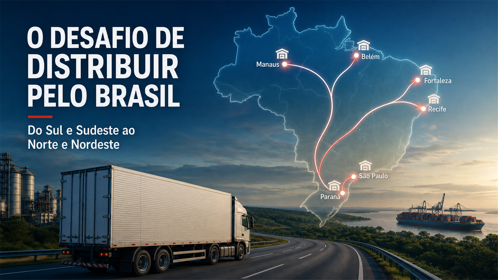

Whenever a company decides to expand sales into Northern and Northeastern Brazil, one question appears almost immediately: how much will delivery cost?
Anyone who works in logistics knows that distance alone does not answer it. Road conditions, carrier availability, return loads, route risk, promised lead time and shipment volume all matter. In the end, this combination reaches the freight bill, the margin or the price paid by the customer.
A road-dependent country with very different realities
Road transportation accounts for approximately 68.5% of freight movement in Brazil. The federal road network, excluding planned sections, covers around 79,600 kilometers, of which 69,500 are paved.
A paved road is not necessarily a good road. A study published by Brazil's Ministry of Planning shows that 67% of the 111,800 kilometers assessed by the 2024 CNT Highway Survey were classified as fair, poor or very poor.
A truck leaving São Paulo, Paraná or Santa Catarina for Recife, Fortaleza, Belém or Manaus faces more than mileage. Pavement, urban crossings, support facilities, maintenance availability and travel reliability change along the corridor. Poor roads increase fuel use, reduce average speed, accelerate vehicle wear and expose the cargo and driver to more risk.
Sources: MCTI road infrastructure data and the Strategic Infrastructure Study.
Many registered carriers do not mean capacity on every lane
In December 2025, Brazil had 1,049,805 carriers registered in the RNTRC database, including active, pending and suspended registrations. During the year, 124,000 new registrations were issued, 14.8% more than in 2024.
Capacity, however, is not evenly distributed. Southern and Southeastern corridors have denser industrial activity and more opportunities for backhauls. On some routes to the North and inland Northeast, a truck may run long distances empty.
The carrier is not pricing only the outbound trip. The full cycle matters: time away, probability of a return load, route risk, vehicle utilization and the date on which the equipment becomes available again.
Source: ANTT 2025 Road Freight Yearbook.
Diesel matters, but it does not explain the entire logistics cost
Fuel may represent 30% to 35% of road transportation operating costs, depending on the vehicle and operation. At the beginning of 2025, average S10 diesel prices reached approximately BRL 6.47 per liter.
A proper analysis must also include drivers, tires, maintenance, tolls, insurance, risk management, depreciation, waiting time and empty mileage. Choosing a carrier only by the lowest total price can exchange a small apparent saving for delays, damage and unavailable capacity.
Current regional fuel prices are available through the ANP price dashboard.
Security must be designed into the route
Longer distances mean longer cargo exposure. In 2024, Brazil's Federal Highway Police inspected more than 1.6 million freight vehicles and recorded 795 cargo robbery incidents on federal roads.
Tracking is important, but it is not enough. Companies need carrier qualification, approved routes and stops, restricted access to trip information and risk classifications based on cargo value, theft attractiveness and corridor history. Effective security reduces risk without making the operation economically unfeasible.
Source: Brazilian Federal Highway Police.
Regional hubs: bringing inventory closer without multiplying problems
Sending every small order directly from the Southeast to its final destination often leads to poor consolidation, multiple transfers and expensive less-than-truckload freight. A regional hub allows the main lane to move as a consolidated shipment and the orders to be separated close to the market.
Salvador and Feira de Santana can support distribution in Bahia; Recife and Suape can serve Pernambuco and neighboring states; Fortaleza and Pecém support the northern part of the Northeast; Belém and Manaus play specific roles in Northern Brazil.
A hub may operate as a distribution center, cross-dock or transit point. It creates value only when savings in consolidated transportation exceed the cost of storage, handling, inventory and local delivery.
Before opening a hub, assess:
- Volume and frequency by region;
- Main-lane vehicle utilization;
- Customer lead-time requirements;
- Regional inventory cost and turnover;
- Consolidation savings;
- Local carrier capacity and service quality.
Coastal shipping: why leave the sea out of the calculation?
For consolidated and less time-sensitive cargo, Brazilian coastal shipping can reduce long-haul road exposure and improve predictability. In 2025, it moved 60.7 million tonnes through Northeastern ports, including 12.5 million tonnes of containerized cargo. In the North, it moved 10.8 million tonnes between January and November, while container volumes increased 8.25%.
The intermodal flow is straightforward: plant or distribution center, short road leg, port of origin, coastal shipping, regional port, hub and final road delivery. It will not fit every product, but it deserves a place in the network model.
Sources: Brazilian Ministry of Ports and Airports on Northeastern coastal shipping and Northern coastal shipping.
In the end, someone pays for inefficiency
Free freight does not exist. Freight is included in the price, absorbed by the margin or paid by the customer through longer lead times and lower service levels.
Applying one national price without knowing regional logistics costs can destroy profitability. Passing the entire difference to the customer may make expansion commercially impossible. The answer is to segment service levels, consolidate freight, develop lane-specific partners, position inventory where demand justifies it and combine transportation modes.
The right metric is not freight price alone. It is total logistics cost: transportation, inventory, warehousing, losses, risk, lead time and service. In Brazil, distribution logistics is a market strategy.
Frequently asked questions
How can companies reduce distribution costs to Northern and Northeastern Brazil?
Consolidate shipments, improve demand visibility, negotiate recurring lane capacity, develop regional partners and compare the total cost of road, hub and coastal shipping solutions.
When does a regional logistics hub make sense?
When shipment volume and frequency generate transportation savings greater than the additional cost of facilities, inventory, handling and local delivery.
Can coastal shipping replace road transportation?
It generally complements it. Road transportation remains necessary at both ends, while the long-distance leg can move by sea.
Data reviewed in July 2026. Figures for 2025 are consolidated; 2026 information reflects availability on the publication date.
Connect freight, inventory, service level and total cost
Use these related resources to evaluate transportation, warehousing, regional distribution and the economics of serving Brazil.
Request a logistics diagnosis